Code
> data(barley, package = "lattice")1. 패키지 lattice에 있는 데이터 프레임 barley는 미네소타 주 농경학자들이 보리 종류에 따른 수확량의 차이를 비교하기 위해서 2년간 6군데 장소에서 경작하여 얻은 자료이다. 수확량은 yield이고, 경작지는 site, 보리 종류는 variety, 경작 연도는 year이다.
1) 보리 종류에 따른 평균 수확량을 계산해서 다음과 같이 크기순으로 나타내자.
> data(barley, package = "lattice")> barley |>
+ group_by(variety) |>
+ summarise(mean_yield = mean(yield)) |>
+ arrange(desc(mean_yield))
# A tibble: 10 × 2
variety mean_yield
<fct> <dbl>
1 Trebi 39.4
2 Wisconsin No. 38 39.4
3 No. 457 35.8
4 No. 462 35.4
5 Peatland 34.2
6 Glabron 33.3
7 Velvet 33.1
8 No. 475 31.8
9 Manchuria 31.5
10 Svansota 30.42) 장소와 연도에 따른 평균 수확량을 계산해서 다음과 같이 출력하자. 출력 방식은 각 장소별로 평균 수확량이 높은 연도의 결과가 먼저 나타나도록 했다. 결과를 해석하라.
> barley |>
+ group_by(site, year) |>
+ summarise(mean_yield = mean(yield)) |>
+ arrange(desc(mean_yield), .by_group = TRUE)
# A tibble: 12 × 3
# Groups: site [6]
site year mean_yield
<fct> <fct> <dbl>
1 Grand Rapids 1931 29.1
2 Grand Rapids 1932 20.8
3 Duluth 1931 30.3
4 Duluth 1932 25.7
5 University Farm 1931 35.8
6 University Farm 1932 29.5
7 Morris 1932 41.5
8 Morris 1931 29.3
9 Crookston 1931 43.7
10 Crookston 1932 31.2
11 Waseca 1931 54.3
12 Waseca 1932 41.93) 보리 종류와 경작지, 그리고 경작 연도의 조합에 따른 수확량의 차이를 나타내는 다음의 그래프를 작성하고, 그 결과를 해석하라.
> data(barley, package = "lattice")
> barley |>
+ ggplot(aes(x = yield, y = variety, color = year)) +
+ geom_point() +
+ facet_wrap(vars(site))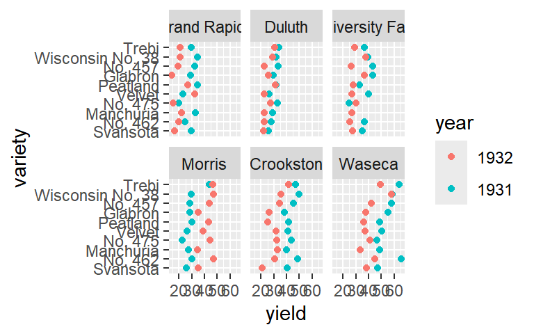
4) 보리 종류에 따른 수확량의 비교 분석에서 경작지와 연도의 효과를 단순 반복 처리한 다음의 그래프를 작성해 보자.
> barley |>
+ ggplot(aes(x = yield, y = variety, color = site, shape = year)) +
+ geom_point()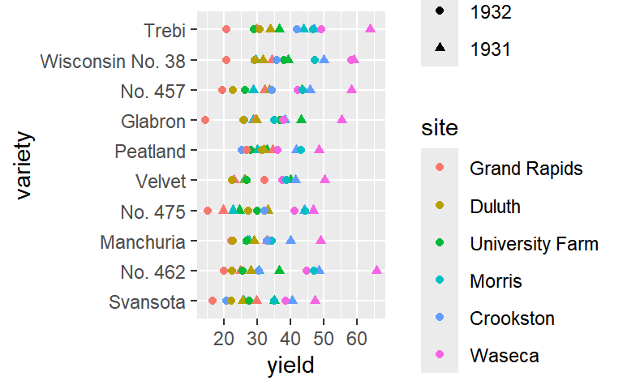
3. 데이터 프레임 airquality는 뉴욕시의 오존 농도에 관한 자료이다.
1) 변수 Ozone에는 많은 수의 결측값이 있다. 월별로 Ozone의 결측값 비율을 다음의 그래프로 나타내 보자. 그래프의 범례에서 Missing은 결측값 여부를 나타내는 것으로서 TRUE는 결측값을, FALSE는 실제 관측된 자료를 나타낸다.
> airquality |>
+ mutate(Missing = is.na(Ozone)) |>
+ ggplot(aes(x = Month, fill = Missing)) +
+ geom_bar(position = "fill") +
+ labs(y = NULL)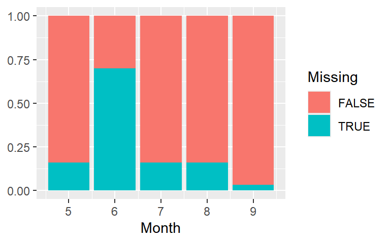
2) 변수 Solar.R에도 많은 수의 결측값이 있다. 변수 Ozone과 Solar.R 중 적어도 한 변수가 결측값을 갖는 날수를 월별로 나타내는 다음의 그래프를 작성해 보자.
> airquality |>
+ filter(is.na(Ozone) | is.na(Solar.R)) |>
+ ggplot(aes(x = Month)) +
+ geom_bar() +
+ ylab(NULL)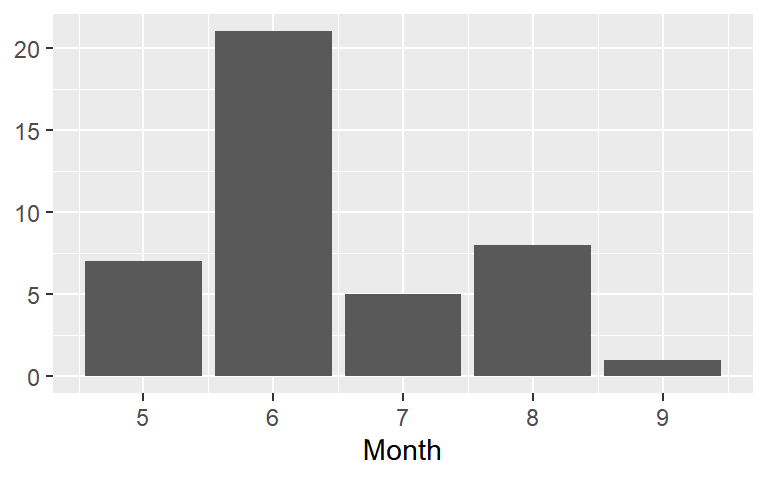
3) 변수 Ozone의 월별 평균값을 다음과 같이 막대그래프로 나타내 보자.
> airquality |>
+ group_by(Month) |>
+ summarise(m_oz = mean(Ozone, na.rm = TRUE)) |>
+ ggplot(aes(x = Month, y = m_oz)) +
+ geom_bar(stat = "identity", fill = "steelblue") +
+ ylab("Mean Ozone")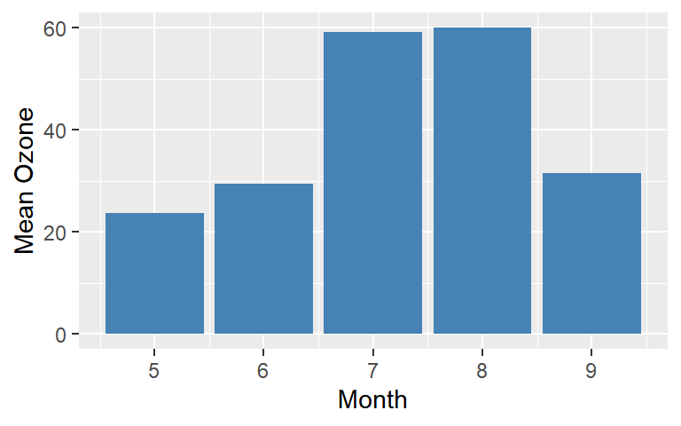
4) 월별로 변수 Ozone과 Solar.R의 산점도에 회귀직선을 추가한 다음의 그래프를 작성해 보자. 결측값이 지나치게 많은 6월 자료는 대상에서 제외한다.
> airquality |>
+ filter(Month != 6) |>
+ ggplot(aes(x = Solar.R, y = Ozone)) +
+ geom_point() +
+ geom_smooth(method = "lm", se = FALSE) +
+ facet_wrap(vars(Month), scales = "free", labeller = label_both)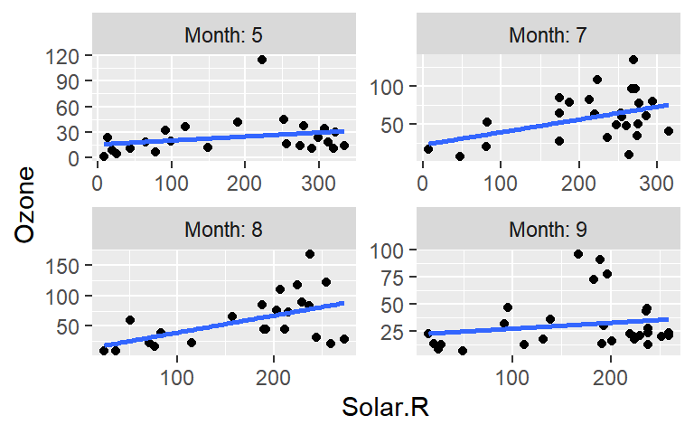
5) 변수 Ozone과 Solor.R의 관계가 Wind와 Temp에 따라 어떤 변화가 있는지 살펴보자. 먼저 변수 Wind와 Temp를 2개의 범주를 갖는 범주형 변수 Wind_d와 Temp_d로 각각 변환시키되, 각 범주에 속한 자료의 개수는 비슷하도록 한다. 이어서 변수 Ozone과 Solor.R의 산점도를 변수 Wind_d와 Temp_d의 조합으로 구분되는 4개 그룹별로 각각 나타낸 다음의 그래프를 작성하고, 의미를 해석하라.
> airquality |>
+ mutate(Wind_d = cut_number(Wind, n = 2),
+ Temp_d = cut_number(Temp, n = 2)) |>
+ ggplot(aes(x = Solar.R, y = Ozone)) +
+ geom_point() +
+ facet_grid(rows = vars(Wind_d), cols = vars(Temp_d),
+ labeller = label_both)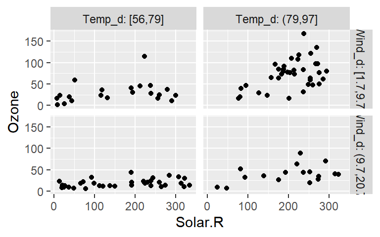
5. 패키지 MASS에 있는 데이터 프레임 Cars93는 1993년 미국에서 판매된 93 종류의 자동차에 대한 데이터로 27개 변수로 구성되어 있다.
> data(Cars93, package = "MASS")1) 변수 Manufacturer, Model 은 자동차 제조 회사의 이름과 자동차 모델 이름이 각각 입력되어 있다. 93대 자동차의 제조 회사 중 빈도가 가장 높은 상위 5개 회사를 구해보자. 현대 자동차의 어떤 모델이 자료에 포함되어 있는지 알아보자.
> Cars93 |>
+ count(Manufacturer, sort = TRUE) |>
+ slice_head(n = 5)
Manufacturer n
1 Chevrolet 8
2 Ford 8
3 Dodge 6
4 Mazda 5
5 Pontiac 5
>
> Cars93 |>
+ filter(Manufacturer == "Hyundai") |>
+ select(Model)
Model
1 Excel
2 Elantra
3 Scoupe
4 Sonata2) 변수 Cylinders의 범주별 빈도를 다음과 같이 구해보자.
> Cars93 |>
+ count(Cylinders, sort = TRUE)
Cylinders n
1 4 49
2 6 31
3 8 7
4 3 3
5 5 2
6 rotary 13) 변수 Cylinders의 6개 범주 중 빈도가 낮은 3개 범주는 제외하고 막대 그래프를 작성하되, 각 범주의 빈도를 다음과 같이 그래프에 함께 나타내 보자.
> Cars93 |>
+ filter(Cylinders %in% c(4, 6, 8)) |>
+ count(Cylinders) |>
+ ggplot(aes(x = Cylinders, y = n)) +
+ geom_bar(stat = "identity", fill = "steelblue") +
+ geom_text(aes(label = n),
+ vjust = "bottom", size = 5, color = "red") +
+ ylim(0,55) + ylab(NULL)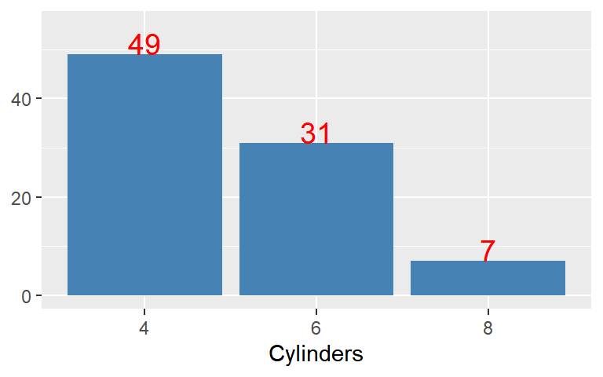
4) 범주형 변수 Cylinders와 Origin의 관계를 알아보고자 한다. 변수 Cylinders의 6개 범주 중 빈도가 낮은 3개 범주는 제외하고 다음 두 그래프를 작성하고, 두 변수의 관계를 설명해 보자.
> Cars93 |>
+ filter(Cylinders %in% c(4, 6, 8)) |>
+ ggplot(aes(x = Cylinders, fill = Origin)) +
+ geom_bar(position = "fill") +
+ ylab("Proportion") 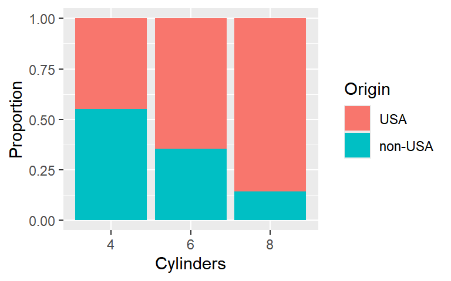
> Cars93 |>
+ filter(Cylinders %in% c(4, 6, 8)) |>
+ ggplot(aes(x = Cylinders, y = after_stat(prop), group = 1)) +
+ geom_bar(fill = "midnightblue") +
+ facet_wrap(vars(Origin)) + ylab("Proportion") 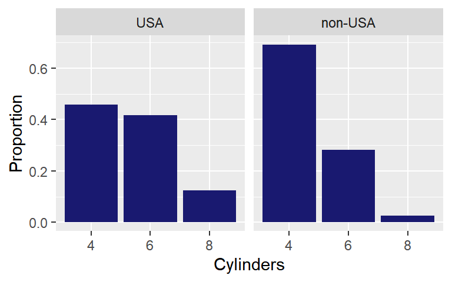
5) 차량의 가격에 대한 변수 중 Max.Price와 Min.Price가 있다. 두 변수의 차이와 변수 Price의 산점도를 작성해 보자. 산점도에 두 변수의 차이가 가장 큰 자동차의 Manufacturer, Model 값을 해당 점 주변에 다음과 같이 표시해 보자.
> Cars93 |>
+ mutate(Diff.Price = Max.Price - Min.Price) |>
+ ggplot(aes(x = Diff.Price, y = Price)) +
+ geom_point() +
+ geom_text(data = mutate(Cars93, Diff.Price = Max.Price - Min.Price) |>
+ slice_max(Diff.Price),
+ aes(label = paste(Manufacturer, Model)),
+ vjust = "top", hjust = "right", color = "red"
+ ) +
+ labs(x = "Difference of Max.Price and Min.Price") 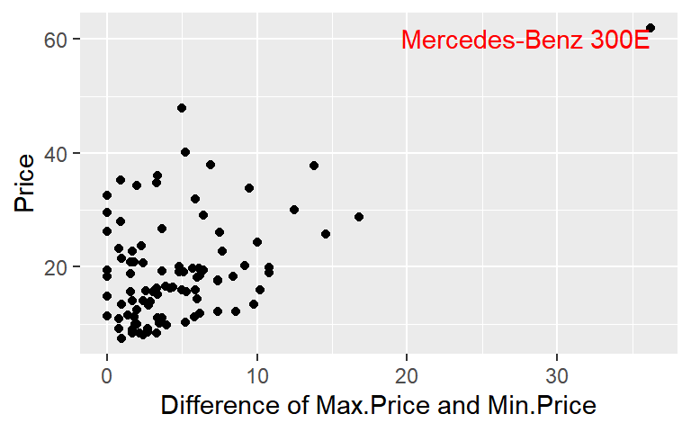
6) 두 숫자형 변수인 Price와 MPG.city의 관계를 살펴보고자 한다. 두 변수의 산점도를 작성하되, Price의 값이 지나치게 높은 두 자동차와 MPG.city의 값이 상당히 큰 세 자동차의 Manufacturer, Model 값을 산점도에 다음과 같이 함께 표시해 보자.
> Cars93 |>
+ ggplot(aes(x = Price, y = MPG.city)) +
+ geom_point() +
+ geom_text(data = slice_max(Cars93, Price, n = 2),
+ aes(label = paste(Manufacturer, Model)),
+ vjust = "bottom", hjust = "right", color = "red") +
+ geom_text(data = slice_max(Cars93, MPG.city, n = 3),
+ aes(label = paste(Manufacturer, Model)),
+ vjust = "top", hjust = "left", color = "blue") +
+ labs(x = "Midrange Price (in $1,000)", y = "City MPG") 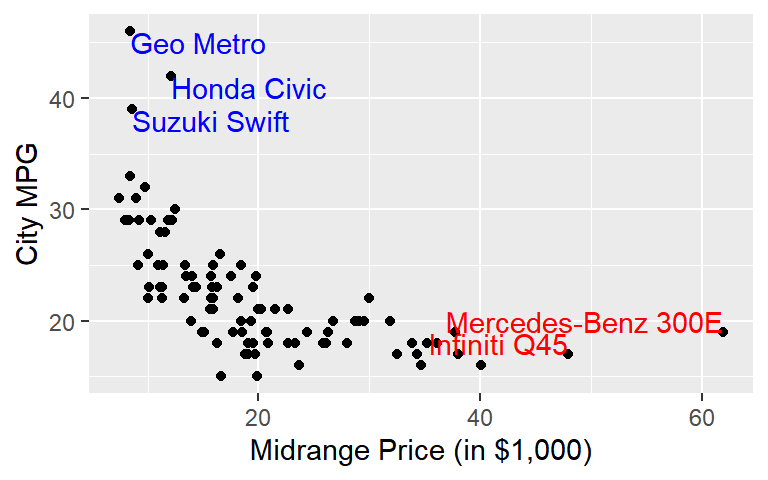